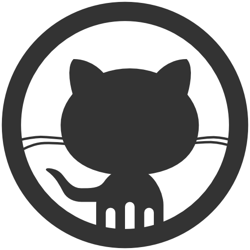

Muestrame tu Github y te dire quien eres

¿Curriculum? ¿Años de experiencia? ¿Carta de recomendación? Este es mi github, acá está mi trabajo y te dejo mi blog o mi twitter. ¿Cuando comienzo a trabajar?
Es muy difícil medir competencias en un mercado tan amplio y competitivo como es la computación. Pero así como existe competencia, existe incompetencia.
Actualmente los profesionales tienden a apoyarse en demasía de sus estudios, grados y títulos para conseguir sus puestos de trabajo, pero a larga, terminan por ser improductivos, entorpecedores del trabajo y con una escasez notoria de conocimiento técnico. Según mi visión, esto suele ocurrir cuando el sistema de selección es estandarizado, donde el item estudio y/o experiencia, tiende a ser mas ponderado y en casos extremos, determinantes para la elección final.
En muchos Paises de LATAM, los técnicos, suelen tener un rol orientado a la productividad y a la ejecución, pero con una clara falencia hacia el fundamento, esto quiere decir que pese a que no saben lo qué hacen y el por qué lo que hacen, ellos lo hacen igual, dado a que está capacitados para hacerlo. Caso contrario con los ingenieros, ellos poseen un enfoque mas fundamental en el conocimiento y cierto grado de competencia en la gestión, pero los pones frente al computador y no tienen idea de cómo plasmar lo que saben.
En lo personal, ambos casos por si solos no son suficientes. No es digno ser ordenado por alguien que no tiene idea de cómo lo hago y no es digno hacer cosas sólo por hacerlas. Ahora surge la pregunta, ¿Cómo me distingo del resto? ¿Cómo sé si entro o no en uno de esos dos grupos? Tal vez a continuación encuentres tu propia respuesta.
Github: ¿El cómo?
¿Así que sabes de tecnología? ¿Cómo me lo puedes demostrar? Recuerda, las palabras son una cosa y la ejecución otra. Es muy difícil que te evalúen correctamente en lo técnico y si lo hacen, será tan básico que hasta un niño de 12 años lo pasará. Esto suele pasar en los trabajos poco remunerados y de muy baja poca proyección, en donde la política es: recurso a bajo coste. Publica tu trabajo, compártelo y masifícalo, así podrás ser competente para puestos mas desafiantes y dignos para ti.
Blog o Twitter: ¿El por qué?
Tener un nombre en la sociedad virtual es muy importante en estos tiempos modernos, acá demuestras que eres una persona de gran influencia para el resto, alguien de opinión, en donde tu palabra es altamente valorada. Ocupa estas plataformas para interactuar, explicar y discutir sobre tus trabajos o conocimientos.
Portafolio: ¿El para qué?
Una cosa es demostrar cómo lo hiciste y lo otro es para qué lo hiciste. Siempre es bueno mostrar y contextualizar tu trabajo, esto es tan o mas importante que la implementación misma. Demuestra que eres multifacético y capaz de desempeñarte en cualquier área del mercado actual. Evita tecnicismos, hazlo cercano, tan cercano al nivel de que tu abuelita sea capaz de entender lo que hiciste.
Nota Final
Se busca ingeniero con proyección para liderar departamento TI
Mi nombre es Tomás, ingeniero, 5 años de experiencia, mis últimos tres desempeñándome como analista en el area de proyectos financieros de la prestigiosa consultora WhoCares Company que trabaja con los principales bancos del país entre ellos el Money Thief Bank. Tengo dos diplomados, uno en gestión de proyectos TI y otro en finanzas. Esta es una carta de recomendación de mi antiguo jefe, sub gerente del area de TI. Mi aptitudes son el liderazgo y el trabajo en equipo. Mi conocimientos están enfocados en el análisis de información, en el manejo de herramientas TI y en la gestión de proyectos. Buen nivel de inglés.
Mi nombre es Sebastián, ingeniero, 5 años de experiencia, mis últimos tres en el Money Thief Bank. Acá trabajé en multiples proyectos orientados a la gestión, uno de los cuales consistió en liderar la implantación de una plataforma BI basado en un trabajo Open Source creado por mi y que actualmente muchas pymes y empresas lo están utilizando, lo puedes encontrar en mi github. No tengo diplomados, me he dedicado a participar en comunidades y proyectos TI, uno de ellos ganadores del Startup Chile como CTO. Este es el twitter, tenemos alrededor de 30k seguidores. Soy metódico, líder y multifacético, he trabajado en diversos campos del mercado, mi portfolio lo avala. El inglés es casi mi lengua nativa.
¿A quién elegirías?